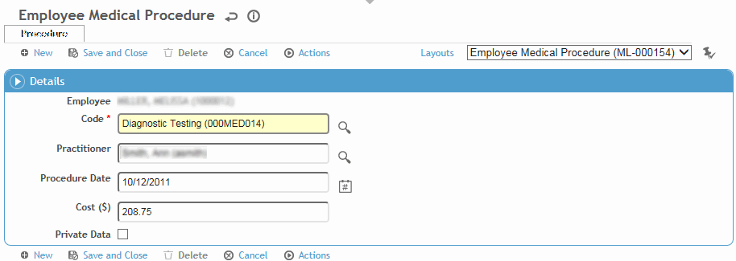

in the list. Select the procedures (can be on different pages) then click Select. Change the default Procedure Date and Provider if necessary. The Cost is populated from the look-up table.
in the list. Select the procedures (can be on different pages) then click Select. Change the default Procedure Date and Provider if necessary. The Cost is populated from the look-up table.
The Procedures tab in a Clinic Visits record lists all activities that have been marked Complete on the Exam Activities tab, if this has been set up in the ScheduleActivity look-up table.
The Procedures tab in a Case Management record lists procedures recorded for the case; the Procedures (Case and Clinic Visits) tab in a Case Management record lists procedures recorded for the case as well as Clinic Visit procedures if this sharing has been allowed in the system settings.
Click a link to modify an existing procedure, or click New.
Select the Procedure performed during the visit, the Practitioner who performed it, and the Date.
Enter or change the Cost of the procedure. This may have been defined in the MedicalProcedure look-up table, but you can edit it.
Click Save.

To add multiple procedures with the same date and provider, click in the list. Select the procedures (can be on different pages) then click Select. Change the default Procedure Date and Provider if necessary. The Cost is populated from the look-up table.
To create a note from procedures, open the procedures subform, select the procedures, then choose Actions»Create Note. The Note Date and Note Time will be populated with the procedure date and current time, unless specified to be different in the note layout (e.g. current time). The note can be edited and signed the same as other notes (see Adding Notes to a Form).